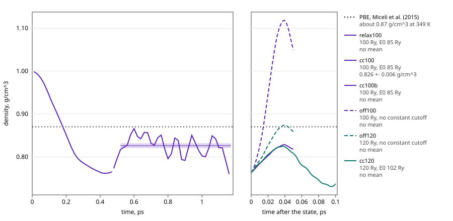

Density of water at a constant cutoff¶
This page explains why NPT dynamics on a fixed plane-wave cutoff gives liquid
water the wrong density, and measures the density that CPMDCCalculator gives
with and without the constant-cutoff functional.
The steps that turn the functional on are in Relax a cell at a constant cutoff;
the GROMACS NPT runs of a QM water in classical water are in cpmdc inside MD engines.
Why a fixed cutoff compresses the liquid¶
Without the functional, every new cell is a new setup of the deck at its cutoff, and the stress is the derivative of the energy at the plane waves of that setup. A larger cell holds more plane waves at the same cutoff, so the energy of the setups falls with the volume faster than that stress says. The difference is the Pulay stress. The barostat holds the stress at the target pressure, which holds -dE/dV of the setups above the target by the Pulay stress, so the liquid settles denser than the volume where -dE/dV is the target. A basis that keeps its plane waves as the cell moves, as Parrinello-Rahman dynamics in a plane-wave code does, has a stress that follows its energy, but its effective cutoff falls as the cell grows, which raises the energy of the larger cells and biases the volume the same way.
The constant-cutoff functional of Bernasconi et al. (reference 1) removes both. The energy belongs to the constant cutoff E0, which stays below the cutoff of the deck in every cell that the run visits, and the stress is the derivative of that energy.
The runs¶
bench/constant_cutoff_npt.py integrates hydrostatic NPT with ASE’s
LangevinBAOAB, whose cell follows the Langevin-Hoover equations of Quigley and
Probert (reference 2): the Martyna-Tobias-Klein barostat with a Langevin piston,
and Langevin dynamics of the atoms.
ASE added that integrator in 3.27, so run needs ASE 3.27 or newer.
start thermalizes momenta with thermalize_momenta on ASE 3.29 and with
MaxwellBoltzmannDistribution on earlier releases, and the module imports on
ASE 3.23.
Each step evaluates the energy, the forces, and the stress through
CPMDCCalculator once.
Every run shares these settings:
32 waters, from the box that
startwrites: a 9.8555 Angstrom cube at 1000 kg/m3, after 10 ps of a classical flexible TIP3P model at 350 K.PBE with the Troullier-Martins pseudopotentials
O_MT_PBEandH_MT_PBEof the CPMD library (reference 3), orbital convergence 1e-5, and orbitals predicted by ASPC of order 4.350 K and 1 bar, a thermostat time
--t-tauof 100 fs, 1 fs steps, and deuterium masses on the hydrogens. The density counts each molecule as H2O, 18.015 u, so that it compares with light water.OpenCPMD on 7 or 8 ranks of one node, as the cost table gives, with
CPMDC_RANK_CONSENSUS=1, andCPMDC_CELL_IN_PLACE=0.01, which keeps the plane waves of a constant-cutoff setup through every cell within 1% strain of it.E0 = 85 Ry and sigma = 4.25 Ry on the 100 Ry deck, and E0 = 102 Ry and sigma = 5.1 Ry on the 120 Ry deck, with the default A of 50 times the deck cutoff, so that E0 + 2 sigma stays below the deck cutoff.
bench/results/constant_cutoff_npt.org names each run by its record:
Run |
Basis |
Ptau, fs |
Start |
Steps |
|---|---|---|---|---|
relax100 |
100 Ry, E0 85 Ry |
500 |
box32.xyz |
470 |
cc100 |
100 Ry, E0 85 Ry |
100 |
relax100.state.npz, 0.47 ps into relax100 |
700 |
cc100b |
100 Ry, E0 85 Ry |
100 |
cc100.final.state.npz, 0.7 ps into cc100 |
50 |
off100 |
100 Ry, no constant cutoff |
100 |
cc100.final.state.npz, 0.7 ps into cc100 |
50 |
off120 |
120 Ry, no constant cutoff |
100 |
cc100.final.state.npz, 0.7 ps into cc100 |
50 |
cc120 |
120 Ry, E0 102 Ry |
100 |
cc100.final.state.npz, 0.7 ps into cc100 |
100 |
relax100 starts from the box with a barostat time --p-tau of 500 fs.
ASE sets the piston mass from that time with a heuristic fitted to aluminium,
and on 32 waters that mass gives a slow swing of the volume: in 0.43 ps the
density falls from 1000 to 761 kg/m3, where it turns.
cc100 continues from the state of relax100 at 0.47 ps with --p-tau 100,
which divides the piston mass by 25 and multiplies its friction by 5, and keeps
the strain rate of the state.
The other four runs start from the last state of cc100 with the same seed, so
they draw the same noise for the thermostat and the piston, and the differences
between them come from the basis.
The stress of one configuration¶
constant_cutoff_npt.py pressure evaluated the last state of cc100, at 763.9
kg/m3 (1253.21 Angstrom3), at six bases with orbital convergence 1e-6 and wrote bench/results/constant_cutoff_pressure.org.
The atomic pressure is the virial of the forces on the atoms; the molecular
pressure is the virial of the forces on the molecular centres of mass, which
leaves out the intramolecular forces.
Neither holds the kinetic term, which is the same at every basis:
Cutoff, Ry |
E0, Ry |
A, Ry |
sigma, Ry |
Energy, eV |
Atomic pressure, kbar |
Molecular pressure, kbar |
Wall, s |
|---|---|---|---|---|---|---|---|
100 |
-15014.0713 |
-29.21 |
-19.98 |
39.3 |
|||
100 |
85 |
5000 |
4.25 |
-14997.8313 |
-5.99 |
-2.24 |
42.3 |
120 |
-15015.7523 |
-14.99 |
-5.47 |
42.1 |
|||
120 |
102 |
6000 |
5.1 |
-15012.0322 |
-11.06 |
-2.44 |
44.3 |
140 |
119 |
7000 |
5.95 |
-15015.2170 |
-12.04 |
-2.64 |
63.0 |
160 |
136 |
8000 |
6.8 |
-15015.8747 |
-12.20 |
-2.59 |
124.1 |
The molecular pressure, which sets the density, has converged at E0 = 85 Ry: it lies 0.35 kbar above that at E0 = 136 Ry, and those at 102 and 119 Ry lie within 0.15 kbar of it. Without the functional, the same configuration has a molecular pressure 17.4 kbar below the converged one at 100 Ry and 2.9 kbar below it at 120 Ry; that is the Pulay stress of a new setup at each cutoff, and the atomic pressures differ by about the same amounts. The atomic pressure at a constant cutoff converges more slowly, 6.2 kbar above the converged one at E0 = 85 Ry, because it holds the virial of the O-H bonds, whose force at a fixed length changes with the basis. In the dynamics the bonds relax to the length of each basis within a vibration, and the time average of the virial of the forces within the molecules cancels the kinetic energy of the motion within them, so the mean atomic and molecular pressures, each with its kinetic term, are equal and the density follows the molecular one.
Density¶
table discards the start of each run that Chodera’s method detects (reference
4), at least 0.05 ps of a run that starts from a state, and gives the
Flyvbjerg-Petersen standard error of the mean (reference 5) at the coarsest
blocking level with at least 8 blocks:
Run |
Length, ps |
Discarded, ps |
Frames used |
Volume, nm3 |
Density, kg/m3 |
Pressure, bar |
Temperature, K |
Wall, s |
|---|---|---|---|---|---|---|---|---|
cc100 |
0.7 |
0.05 |
651 |
1.1598 +- 0.00801 |
826.1 +- 5.67 |
-23 +- 244.5 |
352 +- 6.1 |
8398 |
Only cc100 is long enough for a mean, and its standard error is a lower bound:
the error of the density still grows from 3.65
kg/m3 at blocks of 0.016 ps to 5.67 kg/m3 at 0.064 ps, the coarsest level with
10 blocks.
The density swings with a period of about 0.1 ps, so the 0.65 ps averaged hold
six or seven swings, and the last took it from 824
kg/m3 at 0.65 ps to 755 kg/m3 at 0.69 ps.
The volume fluctuations over those 0.65 ps give a compressibility var(V)/(kT
mean(V)) of 2.3e-5 /bar, uncertain by tens of percent with so few swings.
The mean temperature, 352 +- 6 K, agrees with the 350 K of the thermostat.
The runs that are too short for a mean:
Run |
No mean |
Density at the start, kg/m3 |
Density at the end, kg/m3 |
Mean pressure, bar |
|---|---|---|---|---|
relax100 |
0.47 ps, less than 0.5 ps to discard and 0.1 ps to average |
1000.0 |
766.0 |
766 |
cc100b |
0.05 ps, less than 0.05 ps to discard and 0.1 ps to average |
763.9 |
817.8 |
1463 |
off100 |
0.05 ps, less than 0.05 ps to discard and 0.1 ps to average |
763.9 |
1049.5 |
5016 |
off120 |
0.05 ps, less than 0.05 ps to discard and 0.1 ps to average |
763.9 |
859.0 |
1769 |
cc120 |
0.1 ps, less than 0.05 ps to discard and 0.1 ps to average |
763.9 |
737.0 |
371 |
From the last state of cc100, with the same noise:
After the start, ps |
cc100b, kg/m3 |
off100, kg/m3 |
off120, kg/m3 |
cc120, kg/m3 |
|---|---|---|---|---|
0 |
763.9 |
763.9 |
763.9 |
763.9 |
0.01 |
784.0 |
823.7 |
791.6 |
785.2 |
0.02 |
802.7 |
946.5 |
826.9 |
805.4 |
0.03 |
820.4 |
1074.4 |
859.5 |
820.8 |
0.04 |
828.2 |
1117.4 |
873.8 |
823.4 |
0.05 |
817.8 |
1049.5 |
859.0 |
807.9 |
0.06 |
780.5 |
|||
0.07 |
762.0 |
|||
0.08 |
745.9 |
|||
0.09 |
735.2 |
|||
0.1 |
737.0 |
With the kinetic term, the state has a pressure of -2.5 kbar at E0 = 85 Ry, -7.6
kbar at E0 = 102 Ry, -25.7 kbar at a fixed 100 Ry, and -11.5 kbar at a fixed 120
Ry.
At the same deck cutoff, the barostat of the run without the functional pulls
the cell in by the Pulay stress, on top of the swing that all four runs share:
at 40 fs, near the top of that swing, off100 stands 289
kg/m3 (35%) above cc100b at 1117 kg/m3, and the compression has heated it to
507 K by 50 fs, while off120 stands 50 kg/m3 (6%) above cc120.
The static compressibility of cc100 turns the 2.9 kbar Pulay stress of 120 Ry
into a density 7% higher; 50 fs show the start of that shift, not where a run
settles.
Between the two constant cutoffs, the change of basis at the start rings the O-D bonds, whose virial swings the pressure of cc120 against cc100b by up to 5 kbar at the 13 fs period of the stretch. That difference averages +1.0, -0.2, and +0.5 kbar over steps 1 to 10, 11 to 30, and 31 to 50, and the first push leaves cc120 10 kg/m3 (1.2%) below cc100b at 50 fs. The molecular pressures of the single points, 0.2 kbar apart, put the equilibrium density at E0 = 102 Ry about 4 kg/m3 above that at E0 = 85 Ry.

Left, the density over windows of 0.02 ps from the start of relax100; the band is the mean of cc100 with one standard error over the frames it averages. Right, every step of the runs from the last state of cc100, 1.17 ps after the start of relax100; a dashed line is a run without the constant cutoff. The dotted line is the PBE density of Miceli et al. (2015).¶
docs/render_constant_cutoff_npt.py draws the figure from bench/results/constant_cutoff_npt.json
when the docs build.
Against a published PBE density¶
Miceli, de Gironcoli, and Pasquarello (reference 6) ran isobaric dynamics of 64 waters with PBE in Quantum ESPRESSO: Troullier-Martins pseudopotentials, Parrinello-Rahman cell dynamics at zero pressure, 0.48 fs steps, and velocities rescaled only when the mean temperature left 350 +- 20 K. They kept the number of plane waves constant, at a cutoff of 85 Ry in a cell of 1 g/cm3, which converges the stress within 1 kbar, and averaged runs of 25 to 35 ps after 5 ps of equilibration. At a mean temperature of 349 K, PBE gave them 0.87 g/cm3, 13% below experiment, which is 870 kg/m3; they quote no error bar.
cc100 gives 826 +- 6 kg/m3 at 352 K, 44 kg/m3 or 5% below their density, and
its standard error is a lower bound.
Its basis explains little of the gap: with the compressibility of cc100, the
0.35 kbar between the molecular pressures at E0 = 85 and 136 Ry puts the density
of the converged basis about 7
kg/m3 higher, and the 1 kbar within which Miceli et al. converge their stress is worth about 20 kg/m3.
The rest lies within what differs between the runs: 0.65 ps of 32 waters against
25 to 35 ps of 64, Troullier-Martins pseudopotentials on both sides but not
necessarily the same ones, and a Langevin thermostat against occasional
rescaling.
The deuterium masses do not enter, since the density of classical nuclei does
not depend on their masses.
A fixed cutoff, by contrast, sets the density by its Pulay stress: 100 Ry passes
1100
kg/m3 within 40 fs, and the 7% that 120 Ry adds would put it near 880 kg/m3,
close to the published density by accident.
Cost¶
The records time every step and count its SCF iterations and new setups:
Run |
Ranks |
Wall per step, s |
SCF iterations per step |
New setups |
Wall, h |
|---|---|---|---|---|---|
relax100 |
8 |
15.3 |
8.9 |
9 |
2.00 |
cc100 |
7 |
11.9 |
8.9 |
16 |
2.33 |
cc100b |
8 |
13.0 |
9.3 |
2 |
0.19 |
off100 |
8 |
19.2 |
17.6 |
50 |
0.27 |
off120 |
8 |
32.5 |
17.0 |
50 |
0.46 |
cc120 |
8 |
16.5 |
9.4 |
5 |
0.47 |
At a constant cutoff a step takes 8.9 to 9.4 SCF iterations, and the in-place
moves hold the new setups to 16 in the 700 steps of cc100.
Without the functional every step is a new setup and takes 17 to 18 iterations:
on the same 8 ranks, off100 costs 1.5 times the wall time per step of cc100b,
and off120 twice that of cc120.
The six single points took 6 minutes, and the runs 5.7 hours on the 8 cores of
one VM.
Tests that keep the stress¶
test_the_constant_cutoff_stress_is_the_volume_derivative_of_the_energyintests/python/test_ase_calculator.pyintegrates the pressure of the one-water deck at E0 = 30 Ry over a 2% stretch and requires it to equal the energy change; the fixed-basis stress of that deck misses the slope by 1.6e-2 eV/Angstrom3, about 1 eV over the stretch.test_a_constant_cutoff_cell_moves_in_place_within_the_strain_limitrequires the in-place moves to start from the stored orbitals and to give the energy, forces, and stress of a new setup.test_constant_cutoff_virial_matches_aseintests/python/test_lammps.pyandtest_opencpmd_constant_cutoff_stress_matches_aseintests/python/test_gromacs_opencpmd.pyrequire the virial that LAMMPS integrates and the stress that GROMACS couples to, fromsystem.constantCutoffin the message, to equal the stress ofCPMDCCalculatorfor the same configuration, and to lie far from the fixed-basis stress.The
constant-cutoff-npt-plotMeson test draws the figure frombench/results/constant_cutoff_npt.jsonand requires a curve per run, a band per mean, the reference line, and the panel of the runs from a shared state.tests/python/test_constant_cutoff_npt_table.pychecks howtablefinds the run that wrote each state, and requires this page to carry the tables ofbench/results/constant_cutoff_npt.organdconstant_cutoff_pressure.orgthat it quotes.
Run it¶
With an OpenCPMD build of libcpmdc in build-cpmd, capnp on PATH, and the
pseudopotentials of the CPMD regression tests:
export CPMDC_PSEUDO_DIR=$CPMD_ROOT/../Regtests/tests/PP_LIBRARY CPMDC_CELL_IN_PLACE=0.01
python bench/constant_cutoff_npt.py start --out box32.xyz
npt() {
mpirun -np 7 -x CPMDC_RANK_CONSENSUS=1 -x CPMDC_PSEUDO_DIR -x CPMDC_CELL_IN_PLACE \
python bench/constant_cutoff_npt.py "$@" --library build-cpmd/libcpmdc.so
}
npt run --start box32.xyz --cutoff 100 --e0 85 --width 4.25 --conv 1e-5 --p-tau 500 \
--steps 470 --out runs/relax100.json
npt run --start runs/relax100.state.npz --cutoff 100 --e0 85 --width 4.25 --conv 1e-5 \
--steps 700 --out runs/cc100.json
cp runs/cc100.state.npz runs/cc100.final.state.npz
npt pressure --start runs/cc100.final.state.npz --output runs/pressure.org \
100 100/85/4.25 120 120/102/5.1 140/119/5.95 160/136/6.8
from=runs/cc100.final.state.npz
npt run --start $from --cutoff 100 --e0 85 --width 4.25 --conv 1e-5 --steps 50 --out runs/cc100b.json
npt run --start $from --cutoff 100 --conv 1e-5 --steps 50 --out runs/off100.json
npt run --start $from --cutoff 120 --conv 1e-5 --steps 50 --out runs/off120.json
npt run --start $from --cutoff 120 --e0 102 --width 5.1 --conv 1e-5 --steps 100 --out runs/cc120.json
Each run checkpoints every 10 steps and continues with
run --library build-cpmd/libcpmdc.so --out RUN.json --resume.
The records and state files stay out of the repository; the tables and the
figure come from them:
python bench/constant_cutoff_npt.py table runs/relax100.json runs/cc100.json \
runs/cc100b.json runs/off100.json runs/off120.json runs/cc120.json \
--json bench/results/constant_cutoff_npt.json --output bench/results/constant_cutoff_npt.org
python docs/render_constant_cutoff_npt.py --out constant-cutoff-npt.svg
References¶
M. Bernasconi, G. L. Chiarotti, P. Focher, S. Scandolo, E. Tosatti, M. Parrinello, “First-principle-constant pressure molecular dynamics”, J. Phys. Chem. Solids 56, 501-505 (1995), doi:10.1016/0022-3697(94)00228-2.
D. Quigley, M. I. J. Probert, “Langevin dynamics in constant pressure extended systems”, J. Chem. Phys. 120, 11432-11441 (2004), doi:10.1063/1.1755657.
N. Troullier, J. L. Martins, “Efficient pseudopotentials for plane-wave calculations”, Phys. Rev. B 43, 1993-2006 (1991), doi:10.1103/PhysRevB.43.1993.
J. D. Chodera, “A Simple Method for Automated Equilibration Detection in Molecular Simulations”, J. Chem. Theory Comput. 12, 1799-1805 (2016), doi:10.1021/acs.jctc.5b00784.
H. Flyvbjerg, H. G. Petersen, “Error estimates on averages of correlated data”, J. Chem. Phys. 91, 461-466 (1989), doi:10.1063/1.457480.
G. Miceli, S. de Gironcoli, A. Pasquarello, “Isobaric first-principles molecular dynamics of liquid water with nonlocal van der Waals interactions”, J. Chem. Phys. 142, 034501 (2015), doi:10.1063/1.4905333.